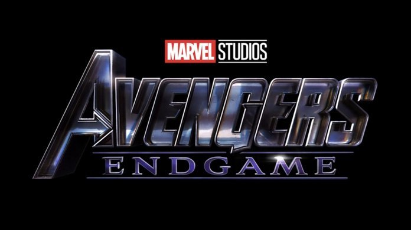

Avengers: Endgame is a 2019 American superhero film based on the Marvel Comics superhero team the Avengers, produced by Marvel Studios and distributed by Walt Disney Studios Motion Pictures. It is the sequel to 2012's The Avengers, 2015's Avengers: Age of Ultron, and 2018's Avengers: Infinity War, and the 22nd film in the Marvel Cinematic Universe (MCU). The film is directed by Anthony and Joe Russo, written by Christopher Markus and Stephen McFeely and features an ensemble cast including Robert Downey Jr., Chris Evans, Mark Ruffalo, Chris Hemsworth, Scarlett Johansson, Jeremy Renner, Don Cheadle, Paul Rudd, Brie Larson, Karen Gillan, Danai Gurira, Bradley Cooper, and Josh Brolin. In the film, the surviving members of the Avengers and their allies work together to reverse the damage caused by Thanos in Infinity War. The film was announced in October 2014 as Avengers: Infinity War – Part 2. The Russo brothers came on board to direct in April 2015, and by May, Markus and McFeely signed on to script the film. In July 2016, Marvel removed the title, referring to it simply as Untitled Avengers film. Filming began in August 2017 at Pinewood Atlanta Studios in Fayette County, Georgia, shooting back-to-back with Infinity War, and ended in January 2018. Additional filming took place in the Metro and Downtown Atlanta areas and New York. The official title was revealed in December 2018. With an estimated budget of $356 million, it is the third-most expensive film ever made. Avengers: Endgame was highly anticipated, and Disney backed the film with extensive marketing campaigns. It premiered in Los Angeles on April 22, 2019, and was theatrically released in the United States on April 26, 2019, in IMAX and 3D. The film received praise for its direction, acting, musical score, visual effects and emotional weight, with critics lauding its culmination of the 22-film story. It also broke numerous box office records and has grossed over $2.3 billion worldwide, surpassing Infinity War's entire theatrical run in just 11 days and becoming the highest-grossing film of 2019 and the highest-grossing superhero film ever, as well as the second-highest-grossing film of all time.
Three weeks after Thanos used the Infinity Gauntlet to disintegrate half of all life in the universe,[N 1] Carol Danvers rescues Tony Stark and Nebula from deep space and returns them to Earth. They reunite with the remaining Avengers—Bruce Banner, Steve Rogers, Rocket, Thor, Natasha Romanoff, and James Rhodes—and find Thanos on an uninhabited planet. They plan to retake and use the Infinity Stones to reverse the disintegrations, but Thanos reveals he has already destroyed them to prevent further use. An enraged Thor beheads Thanos. Five years later, Scott Lang escapes from the quantum realm.[N 2] He travels to the Avengers' compound, where he explains to Romanoff and Rogers that he experienced only five hours while trapped. Theorizing that the quantum realm could allow time travel, the three ask Stark to help them retrieve the Stones from the past to reverse Thanos' actions in the present, but Stark refuses to help out of fear of losing his daughter, Morgan. After talking with his wife Pepper Potts, Stark relents and works with Banner, who has since merged his intelligence with the Hulk's strength and body, and the two successfully build a time machine. Banner warns that changing the past does not affect their present and that any changes instead create branched alternate realities. He and Rocket go to New Asgard, the Asgardian refugees' new home in Norway, to recruit Thor, now an overweight alcoholic, despondent over his failure in stopping Thanos. In Tokyo, Romanoff recruits Clint Barton, now a ruthless vigilante following the disintegration of his family. Banner, Lang, Rogers, and Stark travel to New York City in 2012.[N 3] Banner visits the Sanctum Sanctorum and convinces the Ancient One to give him the Time Stone. Rogers successfully retrieves the Mind Stone, but Stark and Lang's interference inadvertently allows 2012 Loki to escape with the Space Stone. Rogers and Stark travel to S.H.I.E.L.D. headquarters in 1970. Stark obtains an earlier version of the Space Stone, encountering his father, Howard, in the process, while Rogers steals several Pym Particles from Hank Pym to return to the present. Rocket and Thor travel to Asgard in 2013, extracting the Reality Stone from Jane Foster[N 4] and retrieving Thor's hammer, Mjolnir. Nebula and Rhodes travel to Morag in 2014 and steal the Power Stone before Peter Quill can.[N 5] Rhodes returns to the present with the Power Stone, but Nebula is incapacitated when her cybernetic implants link with those of her past self. Through this connection, 2014 Thanos learns of his future success and the Avengers' attempts to undo it. Thanos captures present-Nebula and sends past-Nebula to the present in the former's place. Barton and Romanoff travel to Vormir, where the Soul Stone's keeper, the Red Skull, reveals it can only be acquired by sacrificing someone they love. Romanoff sacrifices herself, allowing Barton to obtain the Soul Stone. Reuniting in the present, the Avengers fit the Stones into a Stark-created gauntlet, which Banner uses to resurrect all those whom Thanos had disintegrated. Past-Nebula uses the time machine to transport past Thanos and his warship to the present where he attacks the Avengers' compound, planning to completely wipe out and then rebuild the universe with the Stones. Nebula convinces past-Gamora to betray Thanos, and kills her past self. A restored Stephen Strange arrives with other Masters of the Mystic Arts, the restored Avengers and Guardians of the Galaxy, the armies of Wakanda and Asgard, and the Ravagers to fight Thanos and his army alongside Danvers, who destroys Thanos' warship as she arrives. After overpowering the heroes, Thanos seizes the gauntlet, but Stark steals the Stones back and uses them to disintegrate Thanos and his army. Stark then dies from the energy emitted in the process. Following Stark's funeral, Thor appoints Valkyrie as the king of New Asgard and joins the Guardians of the Galaxy while Quill searches for 2014 Gamora. Rogers returns the Infinity Stones to their original places in time and remains in the past to live with Peggy Carter. In the present, an elderly Rogers passes on his shield and mantle to Sam Wilson.
The benefactor of the Avengers with electromechanical suits of armor of his own making.[4][5] According to directors Joe and Anthony Russo, Downey was one of the few actors to read the entire screenplay for the film
An Avenger and the king of New Asgard, based on the Norse mythological deity of the same name.[7] Thor now wields a mystical axe known as Stormbreaker, after the destruction of his hammer, Mjolnir, in Thor: Ragnarok.[
The leader of the Avengers. A World War II veteran, he was enhanced to the peak of human physicality by an experimental serum and frozen in suspended animation before waking up in the modern world